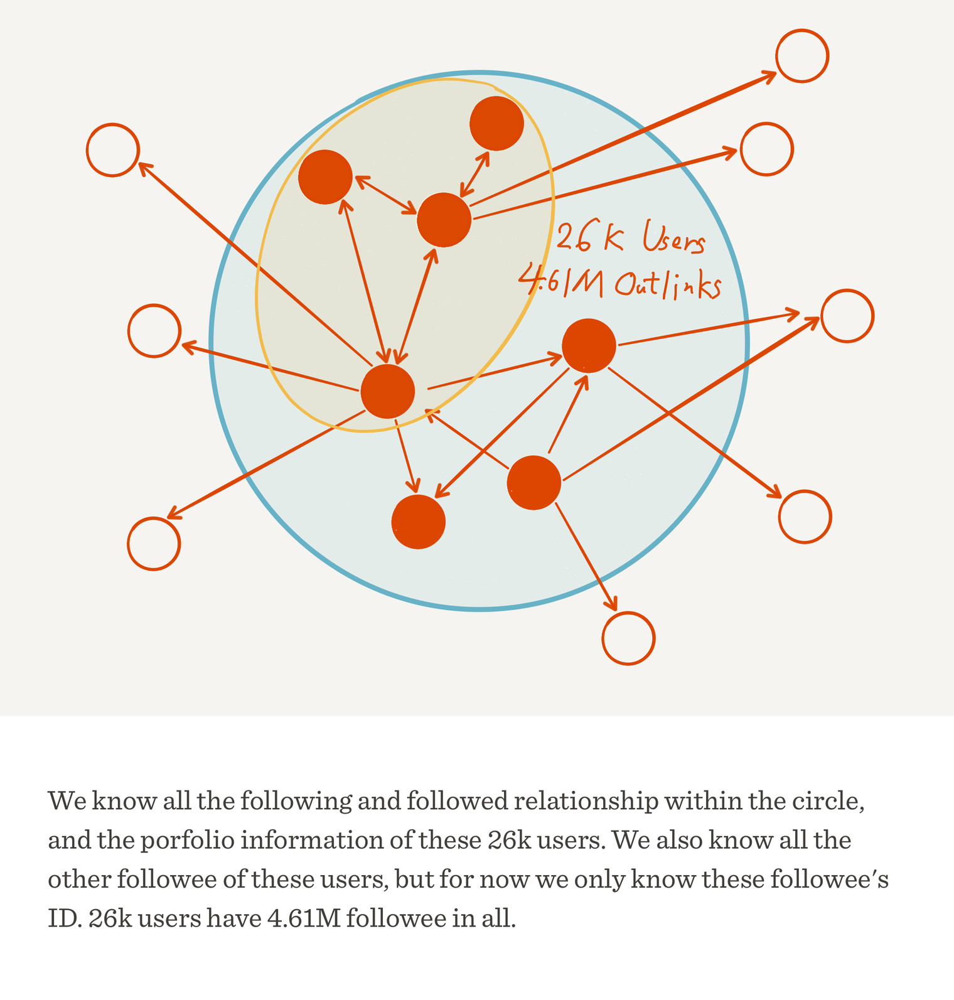
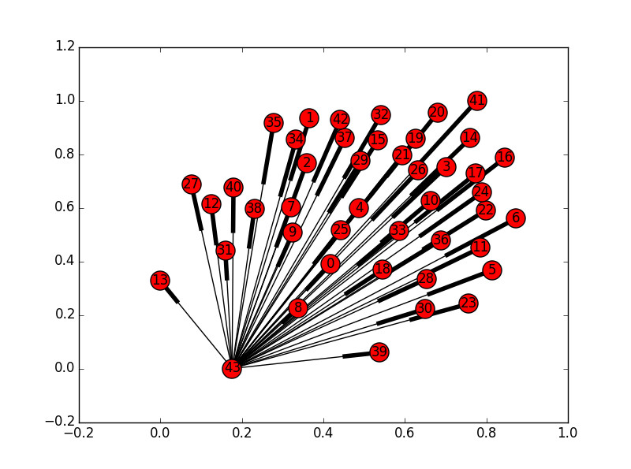
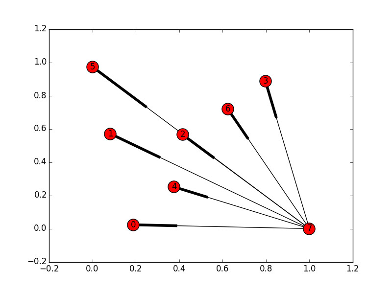
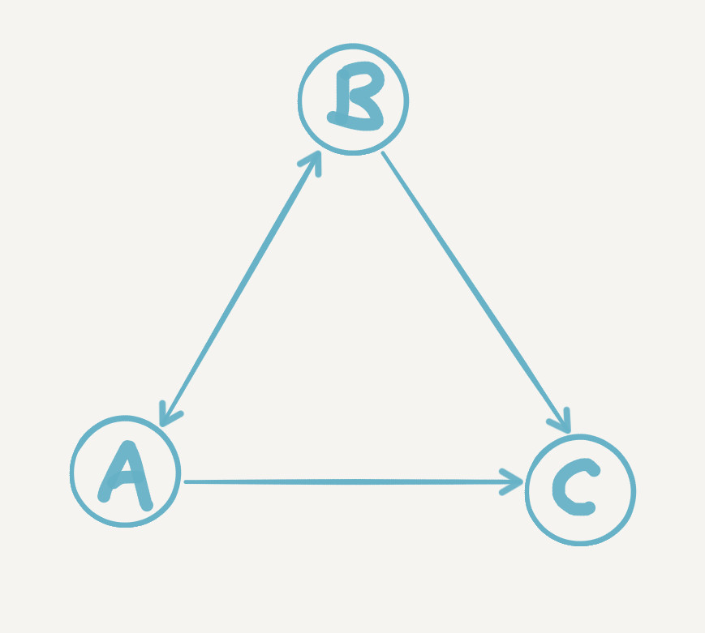
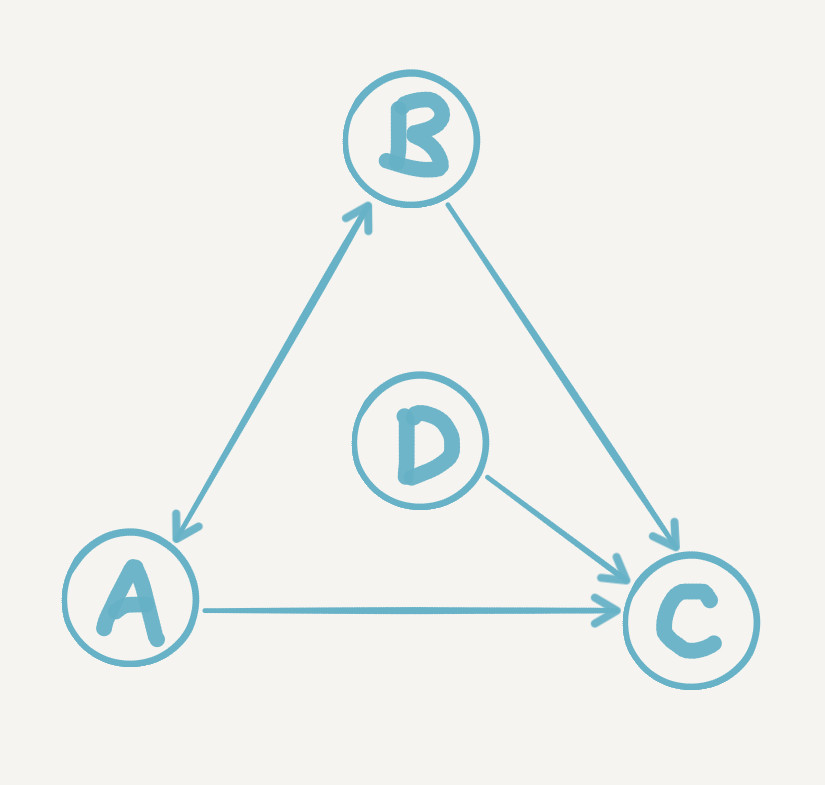
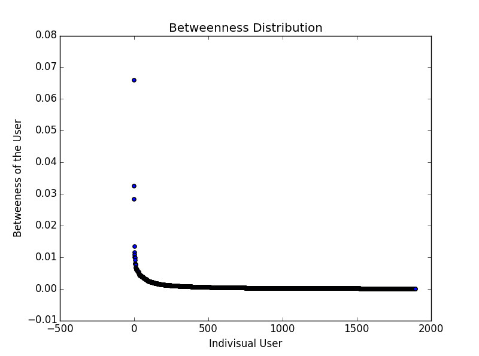
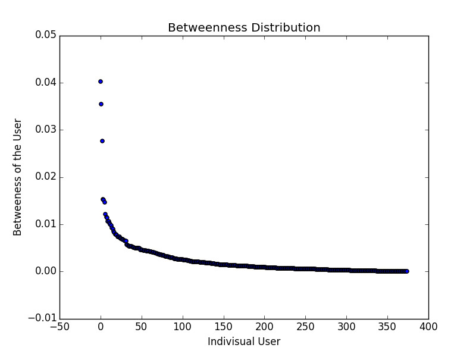

Explore Zhihu 2015: People, Connections and Influence, the interactive research page bringing both essays together.
Keywords: social network analysis (SNA) | complex networks | graph theory | network centrality | trending topic discovery
This is the second part of Zhihu Social Network Analysis. It is mainly an analysis of the network of Zhihu users following one another. For an introduction to the project (and the data, code and report) and the basic statistics, see Zhihu Social Network Analysis (1): Basic Statistics.
Introduction: What Is a Social Network?
After the basic statistics in the first part, we have some idea of the overall picture of Zhihu users' upvotes, answers, thanks and follows. Now let's first consider a question: what exactly do we mean when we talk about a social network? Perhaps you'll say, isn't that obvious? As long as many people take part in something, it naturally has a social character, and so a social network arises. Then let's think it over: does Wikipedia have a social character?
It's true that many people take part in editing Wikipedia's articles, but is there more direct interaction between these people? Suppose the editors interact through QQ, Weibo and the like: does the social character that produces count as a social attribute of Wikipedia itself? Even if Wikipedia offers features such as talk pages that let editors interact directly, those interactions are still based on a particular article. Once the article has no major problems left, the interaction basically stops along with the editing. I don't think relationships set up temporarily like this can give a fairly stable social network.
Let's think of another example. We know that a science comes from the joint contributions of many people across the ages. Can those many people form a social network? Of course not. The so-called dialogue between Newton and Einstein is only a figure of speech; how could a paper already published cite a paper from the future? But when we consider the same discipline in the same era, things are different: there really are all kinds of possibilities for scholars to communicate and collaborate, so we can consider the network formed by co-authorship in academia to have a social character.
From this rough reasoning, we might sum up a few conditions for a social network to form: direct interaction between multiple agents, long-term interaction, and near-simultaneous interaction.
Now let's go back to Zhihu. Upvotes, thanks, answers, follows: which user behaviour best satisfies these three conditions? Answers are based on questions. Zhihu's product design doesn't highlight who asked a question, and a question can be edited by different people (permissions somewhat like Wikipedia's), which means answerers generally don't much care who asked, so answering hardly even counts as interaction. Upvotes, thanks and comments (which we haven't mentioned before) are relatively more direct interactions, but one click and it's done; they are not long-term. Only following satisfies all three conditions at once. You might ask: following is also just a click, so how can it count as long-term? Don't forget Zhihu's timeline, which makes followers more likely to see the activity of the people they follow and interact with them, and as long as the follow isn't cancelled, this effect on the timeline is long-term.
So we can take it that if we want to analyse Zhihu from the angle of social networks, we should focus on who follows whom among Zhihu users. Next I will describe the specific analysis we did on this.
What We Analysed and How
First, some basics about networks:
A network can be represented as a graph, which has two basic elements: vertices (or nodes) and edges (or links). Edges can have a direction, which means a node can have two kinds of edges: out-links and in-links. If the edges have directions, the graph is called a directed graph; otherwise it is an undirected graph. A graph reflects some kind of relation between nodes, and the edges express that relation.
Back to Zhihu. We know that following and being followed are really two views of the same thing: A following B is equivalent to B being followed by A. In the data we crawled (see the overview diagram below), we know whom each of these 26,000 users follows. That is, we know all the out-links of the 26,000 user nodes. Seen from the other side, we know who follows whom among these 26,000 users (the part inside the blue circle), plus whom else they follow (the part outside the blue circle). So we can only analyse these 26,000 users (the filled red circles), because we don't know all the links of the other people (the hollow red circles). This comes from our breadth-first crawling: short of crawling the whole of Zhihu, there is no truly complete data (accounts that nobody follows can presumably be ignored).

Besides, even with the part outside the blue circle removed, the number of edges involved is still very large, and computation would be a problem. So in this project we chose only two interesting subsets of the 26,000 users to analyse: users who have received more than 10,000 upvotes (1,895 people) and users who have received more than 50,000 upvotes (375 people). For convenience we named them Net10k and Net50k; you could say they are two tiers of Zhihu's "big Vs", its big-name accounts.
Next, the methods. A network graph contains only two things, nodes and edges, but it can hold all sorts of phenomena and properties of extreme complexity. In network analysis, or more broadly the field of complex networks, there are a great many concepts people have defined to describe network phenomena, and measures designed to quantify network features. The analysis that follows rests on some of the most basic of them. Introducing each in detail would make this piece much longer and add quite a few mathematical formulas, which is not what I want this piece to be. So I will try to explain what each one means from intuition, and even where I give a definition I won't try to be rigorous (only mathematical formulas can give the clearest, most rigorous definitions); the focus stays on thinking about the analysis. Also, since the Zhihu follow network we are discussing is a directed graph, all the measures and algorithms below are discussed for directed graphs only. Of course, readers who already have some background can skip the relevant paragraphs.
Big Vs in a Huddle: Overall Features of the Network
Zhihu has always given people the impression that the big Vs like to stick together. You follow me, I follow him, he follows you, forming a tight circle. So how do we quantify this?
Suppose a follow network of three users, A, B and C, whose only edge is A->B. Would you say this network is tight? We can think of it like this: there can be at most 6 edges between three people, so we can express how tight the network is as 1 divided by 6. If all 6 edges exist, the tightness is 1; if none do, it is 0. This is what is called the density of a graph. The densities of Net10k and Net50k are 0.064 and 0.195 respectively, so at this point we can guess that big Vs with more upvotes also follow each other more tightly.
Next let's look at this guess from another angle. First, a few more definitions:
-
The degree of a node: the total number of other nodes connected to a node by edges is called its degree. In a directed graph a node has two degrees, the out-degree and the in-degree: one counts only the nodes it can reach, the other only the nodes that can reach it. For following on Zhihu, it's easy to see that the out-degree is the number of people you follow and the in-degree is the number of people who follow you;
-
A path between nodes: if you start from node A and reach node B through one or more edges, we say these edges, joined in order, form a path between A and B. The number of paths between two nodes is always greater than or equal to 0. Assuming every edge has the same length, the path with the fewest edges is the so-called shortest path, and the length of the shortest path is usually taken as the distance between the two nodes;
-
The average shortest path length of a graph: for a network, taking the arithmetic mean of the shortest path lengths between every pair of nodes gives the so-called average shortest path, which can be used to measure the average distance between nodes in the network. The legendary six degrees of separation actually refers to a network whose average shortest path length is 6 (you might think here about how edges, degree and paths are connected);
-
The eccentricity of a node: for any node P in a graph, work out the shortest path lengths (distances) from it to every other node; the largest of these distances is called the eccentricity of P.
-
The radius and diameter of a graph: the radius and diameter of a graph are the smallest and largest node eccentricities in it. Note that a graph's diameter is not necessarily twice its radius.
-
A strongly connected subgraph of a graph: imagine a subgraph G' of a network graph G (meaning the nodes and edges of G' can only be picked from G) in which every node can reach any other node by some path. Then we say G' is strongly connected, and it is a strongly connected subgraph of G. Note that a single node on its own also counts as a strongly connected subgraph, although there is nothing about a single node worth studying;
-
A strongly connected component of a graph: a maximal strongly connected subgraph G'' of G (meaning that adding any of the remaining nodes of G to G'' would break its strong connectivity) is called a strongly connected component of G. Note that maximal does not mean large;
Tired of all these words? At last, some pictures. Below are diagrams of the strongly connected components of Net10k and Net50k:


Each red circle stands for a strongly connected component, and each line (actually a very abstract arrow, orz) stands for a path. This alone doesn't tell us much, so let's look at some figures for the two:
| Net10k | Net50k | |
|---|---|---|
| Nodes | 1895 | 375 |
| Edges | 231416 | 27324 |
| Strongly connected components | 43 | 8 |
| Nodes per strongly connected component | 1853,1,...,1 (42 ones) | 368,1,...,1 (7 ones) |
To sum up what we have learned:
- Net10k and Net50k are basically strongly connected graphs. Forget sticking together; they are simply squeezed into one lump (all right, one circle).
- Apart from one giant circle, all that is left in each group is a few aloof big Vs who go their own way (each a strongly connected component of a single node). Other big Vs follow them, but they follow no one back. In a network, nodes like this are also called dangling nodes;
Now let's concentrate on the two largest strongly connected components. They are connected, sure, but if A has to go through 100 people to reach B, then on following alone, it's probably just not meant to be. Let's name the largest strongly connected components of Net10k and Net50k Net10k-C and Net50k-C. Here are their figures:
| Net10k-C | Net50k-C | |
|---|---|---|
| Nodes | 1853 | 368 |
| Average shortest path length | 2.11 | 1.85 |
| Radius | 2 | 2 |
| Diameter | 5 | 4 |
Say you are a big V in Net50k-C and don't yet know another big V in it. No matter: the people followed by the people followed by the people you follow... will include them sooner or later, so you will always have a chance to see each other. Strong connectivity guarantees that there is always a path, and the average shortest path assures you that on average the path is short, only about 2. The diameter and radius tell you that in the worst case (you happen to be the two members of the whole circle who are farthest apart), the road to meeting in person is between 2 and 5 (4) steps long. What a small world, say the magpies who build the bridge for lovers to meet (kidding).
Now compare the average shortest path lengths and diameters of Net10k-C and Net50k-C: both are smaller for the latter, which shows from another angle that the latter's circle of follows is tighter. And note that these big Vs come from all sorts of different professional fields, yet they all cling tightly together. That is a very interesting phenomenon, worth analysing further.
Ranking the Big Vs: Link Analysis of the Network
The last section focused on the big Vs' follow network as a whole, which is certainly interesting; but perhaps more interesting still is each individual in that whole. They are all big Vs with high upvote counts, but can they be ranked against one another? Do they differ in the social behaviour of following, and how can we measure the difference? These are the questions this section deals with.
Let's first imagine a simple follow network with only three people, A, B and C. A follows B, B follows A, A and B both follow C, and C follows nobody, as shown below:

So, going by follows alone, who is the "biggest deal" among A, B and C? Intuitively, of course, C, because C gets the most follows of the three. But do more followers always mean a bigger deal? Building on this network, let's consider a few interesting cases:
- 10 more users, each with 0 followers of their own, all follow A
- 10 more users, who all follow each other and have no other followers besides
- 10 more users, each with 1 follower of their own, all follow A, and each of them also follows 10,000 other users
Can we say that A in case 1, or the 10 users in case 2, are a bigger deal than C? The first two cases are clearly unreasonable; they are fairly typical cheating. The cheating exploits the loophole in ranking by follower count alone: it ignores differences in the quality of each follow link. The third case is a normal enough phenomenon, but you might feel that, for one thing, these users have only 1 follower each, which is almost the same as 0, and for another, they follow so many users. So when they follow A, is it really because A is important?
Now that we have found the loophole, and setting aside other factors such as upvotes, can we fix it using the follow network itself? Intuitively, we might think of measuring a follower's quality by the quality of that follower's own followers. But the quality of the followers' followers has to be measured by the quality of the followers' followers' followers... so where does it all end? Here we see how shallow the depth of thought that the structure of everyday language can carry is. When a problem reaches this level of complexity, language is pale and powerless, and we have no choice but to hand it over to mathematics.
The PageRank algorithm (I won't go into its relation to Google) is a mathematically very elegant answer. It not only takes into account the problem of link quality described above but also handles every special case: whatever the follow network looks like, it is guaranteed to give a satisfactory ranking of how important the users are.
Below are the PageRank values we calculated for Net10k and Net50k. Note that only the links among the big Vs themselves are considered, and that the PageRank values of all the big Vs in a circle add up to 1. The top five Zhihu big Vs come out as follows:
| Net10k top 5 | PageRank |
|---|---|
| Huang Jixin (黄继新) | 0.00736 |
| Ma Boyong (马伯庸) | 0.00560 |
| Zhang Jiawei (张佳玮) | 0.00551 |
| Ge Jin (葛巾) | 0.00510 |
| Zhou Yuan (周源) | 0.00503 |
| Net50k top 5 | PageRank |
|---|---|
| Huang Jixin (黄继新) | 0.0112 |
| Ma Boyong (马伯庸) | 0.0103 |
| Zhang Jiawei (张佳玮) | 0.0102 |
| Liang Bianyao (梁边妖) | 0.0095 |
| cOMMANDO | 0.0090 |
These are the big Vs standing at the very top of Zhihu's big Vs. Does it seem to make some sense? Compare the PageRank values of the top five in Net10k and Net50k: the former are smaller than the latter, mainly because the PageRank total of 1 is shared among more big Vs.
Now let's consider one more point. What counts as "important" really depends on what we are after. If we want to read more good answers, or find someone to write a book or an article for us, we can go straight to the authors of good answers, and these authors tend to attract the most follows, so we only need to know who is followed most strongly (like C in the diagram below).
But going by follows alone, we will miss good answerers who haven't yet been strongly followed (perhaps big Vs with potential who have just joined Zhihu), and we can't possibly dig out these good answerers one by one ourselves. What to do? Simple: if you can find a few users who act as matchmakers (like D in the diagram below), whose every follow you trust to be good and to your taste, things get easy. Just check from time to time whom they follow, and you will discover a bigger world. This is actually a workable idea for a user recommendation system, but I won't go into it here.

The HITS algorithm can do this using only the follow network: with Authority and Hub scores, it picks out good answerers and good matchmakers for us.
Does the intuitive analysis above hold up? Let's look at the top five by authority and hub in Net10k and Net50k:
| Net10k Auth top 5 | Auth | Net10k Hub top 5 | Hub |
|---|---|---|---|
| Zhang Jiawei (张佳玮) | 0.0345 | Zhou Nuo (周诺) | 0.00344 |
| Liang Bianyao (梁边妖) | 0.0339 | Yang Dalanren (杨大懒人) | 0.00338 |
| Ge Jin (葛巾) | 0.0324 | Junmo Faust (君陌Faust) | 0.00336 |
| Ma Boyong (马伯庸) | 0.0319 | ZENHO | 0.00325 |
| Huang Jixin (黄继新) | 0.0315 | Gancuimian (干脆面) | 0.00290 |
| Net50k Auth top 5 | Auth | Net50k Hub top 5 | Hub |
|---|---|---|---|
| Liang Bianyao (梁边妖) | 0.00749 | Yang Dalanren (杨大懒人) | 0.00976 |
| Zhang Jiawei (张佳玮) | 0.00721 | Junmo Faust (君陌Faust) | 0.00972 |
| Ma Boyong (马伯庸) | 0.00683 | ZENHO | 0.00953 |
| Cai Tong (采铜) | 0.00677 | Edison Chen | 0.00885 |
| Xie Xiongmao Jun (谢熊猫君) | 0.00670 | Xu Xiangnan (徐湘楠) | 0.00798 |
On Auth (good answerers), I believe most people would agree with these lists. It's worth noting that Zhang Jiawei (by the way, "Young Master" Zhang Jiawei is the shining peak towering over every curve in the first part) and Liang Bianyao swap places between the two groups of big Vs, which is interesting. Also, in Net50k, Cai Tong leaps into the top five, Prince Ma, as Ma Boyong is known (touch wood), rises one place, and Huang Jixin drops out. These changes may reflect a difference in the preferences of different groups of big Vs.
On Hub (matchmakers), to be honest the only one I personally know of is Xu Xiangnan, and one of them currently has a deactivated account, so I won't analyse this much. Only one thing is rather interesting: as big Vs, a very large number of followers is normal, but these users also follow a lot of people, several of them even thousands, so you can't help calling them a bit of a socialite. One more thing: the fifth-ranked Net10k hub, the user called Gancuimian, I can no longer tell who it is. The original user ID was wang-wang-wang-08-18, which has since been changed, and I can't shake the feeling that there is some connection with Xu Xiangnan (ID: miaomiaomiao)...
Taken together, HITS and PageRank put quite a few of the same users on their lists. Why? Let me give an explanation that I intuitively believe is right: the PageRank value is in fact the result of combining the hub and authority values in some way (it actually feels more like multiplying them), so when one of hub or auth is strong and the other is not weak, PageRank is correspondingly high, and it is quite normal for the two algorithms to give partly the same results. Huang Jixin is a typical example: his auth and hub values are not the highest in either Net10k or Net50k, but both are in the top 20, while his PageRank is first. He has content, and he can also act as a channel.
Balance Within Imbalance: Closeness and Betweenness Centrality
Let's sum up so far. To measure how "important" a user is in the follow network, we can use these measures:
- the user's number of followers, that is, the in-degree
- the user's PageRank value
- the user's HITS values
In network analysis they can also be put in the same class of measures: node centrality. But we find that the "importance" the three measures express does not mean quite the same thing; in the same network, the same node may rank quite differently under different centralities. Next, allow me to introduce the last two node centralities used in this project:
-
Closeness centrality of a node: a node with high closeness centrality is, on the whole, close to the other nodes in the network; with low closeness centrality, far from them. If a network of logistics warehouses needs to pick one warehouse as its central transfer hub, one that is on the whole closest to all the other warehouses, one way is to find the warehouse with the highest closeness centrality.
-
Betweenness centrality of a node: a node with high betweenness centrality is one that many or even all of the shortest paths between other nodes must pass through. If this node disappeared, communication between the other nodes would become difficult, perhaps even cut off (because the original shortest paths are broken). So if you wanted to hack a network, you know which node to go for. Looked at another way, these nodes are just like bandits waiting at a pass on the Silk Road that everyone must go through. No toll? Then there's no road for you, and you can forget about doing business.
I have not yet found widely accepted Chinese names for these two centralities, so for now I have made up my own. Also, as with PageRank and HITS, the calculation of these measures is a bit complicated, so I won't go into detail here. But we used the implementations in the network analysis library NetworkX throughout, and readers interested in the details of the algorithms can look them up in its documentation.
In this project we calculated the closeness and betweenness centrality of Net10k and Net50k and plotted their distributions. Because we didn't think it through at the time, the closeness centrality we calculated was based on out-links rather than in-links, which I don't think means much (you can always follow more people to get a higher closeness centrality), so I have decided to skip it in this piece. Below I will mainly discuss betweenness centrality; its distributions for Net10k and Net50k are as follows:


Once again we have two long, long tails. The horizontal axis is each individual big V, and the vertical axis is that big V's betweenness centrality. The long tails show that most big Vs have a betweenness centrality close to 0, and even though a few people outside the long tail are far above the rest, their betweenness values are still very small. What does this tell us? That even if these big Vs left Zhihu, it would hardly affect the other big Vs' ability to form follow relations with each other. Without you, I still have many other shortest paths to another big V. And what does that tell us in turn? That the big Vs' follow network is remarkably robust, so robust that even losing many nodes would have almost no effect on the connectivity of the whole circle.
Now compare Net50k and Net10k side by side, and you can see that as the circle grows, the power law gets stronger: apart from a few nodes, most people's betweenness centrality is even closer to 0, and the growth in numbers further dilutes most people's "uniqueness". Intuitively I believe that if we kept widening the circle, to Net5k, Net1k or even all Zhihu users, this robustness would only get stronger and stronger. Although people differ from one another exponentially, to the network itself, everyone is almost equally important, and equally unimportant. Perhaps this could be called a kind of balance within imbalance in Zhihu's follow network.
What the Big Vs Care About: Trending Topics
Finally, we tried a way of finding the trending topics on Zhihu (the only analysis of content in this project). We first took the dominating sets of Net10k and Net50k (since I believe the results would not be significantly different without using this subset, I won't explain the concept here), then counted the question tags of all the answers written by the users in these sets, and finally sorted the topic tags by the number of times they appear. Here are the top 20 for each:
Top 20 trending topics in Net10k:
Surveys 3792, Daily Life 3096, History 1713, Romance 1464, Psychology 1432
Film 1419, Interpersonal Relationships 1404, Society 1332, Internet 1214, Emotions 1197
Politics 1028, Relations Between the Sexes 994, Education 897, China 823, Life 815
Games 805, Literature 772, Zhihu 772, Law 750, Music 738
Love 699, Culture 659, Startups 628, University 621, Programmers 619
The Mind 617, How Do You Rate X 609, Women 604, Programming 585, What Is It Like to X 582
Top 20 trending topics in Net50k:
Daily Life 1435, Surveys 1365, Politics 1285, History 1204, Film 1084
Health 996, Society 984, Medicine 941, Romance 717, China 695
Relations Between the Sexes 688, English 678, Interpersonal Relationships 640, Psychology 634, Internet 595
Law 587, Microsoft 555, United States 552, Fitness 538, Programming 511
Personally, I think the topics of the questions the big Vs answer can reflect, to some extent, how popular each topic area is on Zhihu as a whole. I also think the topics at the very top go some way to explaining why big Vs from different fields stick together: whatever their professional field, people are always interested in the humanities and in broad entertainment topics such as life, history and film. Once they share those interests, and all have good insights to share, they naturally find it easier to appreciate one another.
With that, this piece can at last come to a full stop. Comments and discussion are welcome. I also want to thank the three other people who worked on this project with me; it took the four of us together to get this far in so short a time (the project report has the details of who did what).